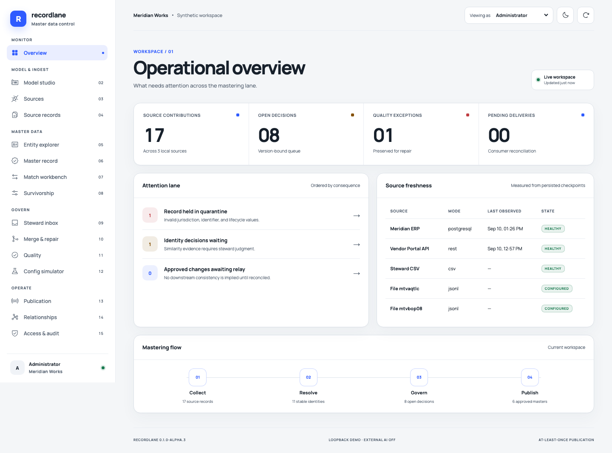
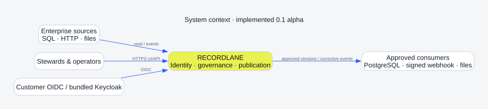

Open-source · self-hosted · evidence first
Master data,
with evidence.
Resolve identities, govern survivorship, and publish trusted records without hiding source contributions or outsourcing control to a mandatory cloud.

Apache-2.0Core governance stays open
PostgreSQL + OIDCPortable production boundaries
No external AIDeterministic core by default
0.1.0-alpha.2Preview, not production certified
Operational truth
Every decision keeps its trail.
01 / LINEAGE
Attribute provenance
Every selected master value points to its source record, source version, verification state, and rule.
02 / CONSTRAINTS
Explainable resolution
Candidate scores are evidence; hard identifier contradictions prevent unsafe automatic clusters.
03 / RECOVERY
Governed correction
Merges and splits preserve contributions, rewrite relationships, and create downstream repair work.
Architecture
A modular monolith with honest boundaries.
